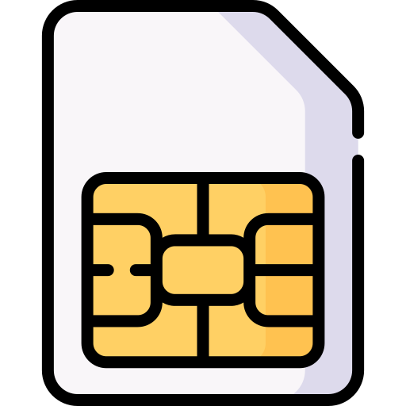

|
|
Bienvenue
Je suis ravi de vous présenter mon cours personnalisé en cybersécurité : 'Initiation au Hacking'.
Ce cours couvre une variété de sujets, y compris :
- Dispositif de suivi : Comprendre comment fonctionnent les dispositifs de suivi et comment se protéger contre eux.
- Usurpation d'email (Email Spoofing) : Apprendre à créer et à identifier des emails falsifiés pour renforcer la sécurité de votre messagerie.
- Usurpation de SMS (SMS Spoofing) : Techniques pour créer et détecter des SMS falsifiés, un outil couramment utilisé dans le phishing.
- SMS Swap : Stratégies pour se protéger contre le swapping de SMS, une technique utilisée pour détourner les messages de vérification en deux étapes.
- Outil d'administration à distance (RAT) : Comprendre comment fonctionnent les outils d'administration à distance et comment se protéger contre leur utilisation malveillante.
- Anonymisation : Techniques pour rester anonyme en ligne et protéger votre identité et vos informations personnelles.
- Kali Linux : Introduction à Kali Linux, un système d'exploitation conçu pour le piratage éthique et la cybersécurité.
- Hacking de téléphones mobiles : Comprendre les vulnérabilités courantes des téléphones mobiles et comment les exploiter de manière éthique.
- Hacking Windows : Apprendre à identifier et à exploiter les vulnérabilités courantes dans les systèmes d'exploitation Windows.
- Phishing : Techniques et contre-mesures pour éviter les tentatives de hameçonnage.
- Exploitation des failles de sécurité : Comprendre les vulnérabilités courantes et comment les exploiter de manière éthique.
- Sécurité des réseaux sans fil : Apprendre à pirater et à protéger les réseaux Wi-Fi.
- Sécurité des applications web : Comprendre les vulnérabilités courantes comme XSS, SQL Injection, CSRF, etc.
Selon vos intérêts, les cours peuvent être adaptés au fil des heures. Les programmes, sites web et applications nécessaires seront mis à votre disposition et pourront être achetés si besoin.
Les cours se dérouleront en tête-à-tête avec moi par téléphone, et nous serons tous deux connectés via TeamViewer à un ordinateur de travail virtuel.
Je suis Jordan Bourbonnais, développeur web Full Stack et intégrateur de systèmes multiplateformes depuis plus de 20 ans.
Je me considère comme un 'chapeau gris' dans le monde de la cybersécurité.
Le tarif est de 75$ de l'heure, par bloc de 4 heures, et les cours seront d'une heure à la fois. J'accepte tous les types de devises.
Il est important de noter que rien d'illégal ne sera fait dans ces cours. Nous serons nos propres cibles et tout restera à des fins éducatives.
Lancez-vous, maintenant ou jamais :)
Téléphone moi
Achetez un bloc de 4 heures

|